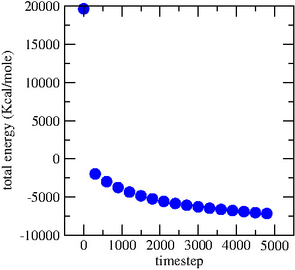

Step 3: energy minimisation
# LAMMPS input script
boundary p p p
units real
atom_style full
bond_style harmonic
angle_style harmonic
pair_style lj/cut/tip4p/long 1 2 1 1 0.1546 12.0
kspace_style pppm/tip4p 1.0e-4
read_data data.01.lammps
include PARM.lammps
The only difference with input.01.lammps is that we open the previously created file 'data.01.lammps' which contains the definition of the simulation box and the positions of the atoms. Next, we are going to create some groups with the different atom types :
group gH2O type 1 2
group gNa type 3
group gCl type 4
group gliquid type 1 2 3 4
group gtopwall type 5
group gbotwall type 6
This will allow us to apply different dynamics to the liquid and to the walls. First, let us force the carbon walls to remain rigid during the simulation.
fix mysf1 gtopwall setforce 0 0 NULL
fix mysf2 gbotwall setforce 0 0 NULL
fix myaf1 gtopwall aveforce NULL NULL 0
fix myaf2 gbotwall aveforce NULL NULL 0
neigh_modify exclude group gtopwall gtopwall
neigh_modify exclude group gbotwall gbotwall
The first fix 'setforce' applies to the group 'gtopwall', which contains all of the atoms of type 5. This fix cancels the x and y components of the forces applied on the atoms of the group at each timestep. Therefore, given that these atoms have no initial velocity (which is the case here), they wont move along x anf y. This fix does nothing to the z component thanks to the 'NULL' keyword. The first fix 'aveforce' applies to the group 'gtopwall', and averages all the force exerted on the atoms of the group over z. As a consequence, the atoms of the group 'gtopwall' move as a block along z. Finally, the 'neigh_modify' commands indicate to LAMMPS that it is not necessary to evaluate interactions between the atoms of a wall, because internal deformations are not permitted. The 'neigh_modify' commands are not necessary, but save computation time.
Now we will include the most important commands for the minimisation:
fix mynve all nve
compute tliq gliquid temp
fix myber gliquid temp/berendsen 1 1 1
fix_modify myber temp tliq
The fix 'nve', which we apply to all atoms, performs constant NVE integration to update position and velocity of the atoms at each timestep. The 'temp/berendsen' fix will rescale the velocities of the atoms of the group liquid (ions + water) every timestep in order to reset the temperature. Since we want to perform a minimisation step, I've set both initial and final temperatures equal to 1K. The third parameter is the damping factor, in time units, which determines how rapidly the temperature is relaxed. A damping factor of 1 fs would be too small for a molecular dynamics simulation, but is acceptable for a minimisation step during which we just want the atoms to move slightly from their initial positions. The 'fix_modify' is used to assign the temperature of the group 'gliquid' as calculated by the compute 'tliq' to the thermostating.
If we were to run the simulation as it is, it would fail, because nothing maintains the shape of the water molecules with time (the bond and angle energies are equal to 0). Therefore we need to use the shake algorithm in order to apply bond and angle constraints to the water molecules. In addition, we will also add a fix 'recenter' in order to maintain the system centred in the middle of the box in the z direction. This fix recenter has no influence on the dynamics.
fix myshk gH2O shake 1.0e-4 200 0 b 1 a 1
fix myrct all recenter NULL NULL INIT
In order to visualise the evolution of the system during the minimisation, let us print the evolution of the total energy. To do so we need to create a variable named 'vetot' and make it equal to 'etotal', which is an internal thermodynamic keyword of lammps corresponding to the total energy (kinetic + potential). The variable is printed in a data file by the fix 'ave/time' every 100 timesteps. Let us also extract the positions of the atoms in a dump file that can be opened with VMD.
variable vetot equal etotal
fix myavt all ave/time 100 1 100 v_vetot file data.02_etotal.dat
dump mydmp all atom 100 dump.02.lammpstrj
Finally, let us choose a very small timestep (because we anticipate that the atoms are initially too close to each others) and run for 1000 timesteps (with the command thermo 100, thermodynamic info are printed in the terminal every 100 timesteps).
timestep 0.1
thermo 100
run 5000
write_data data.02.lammps
Execute the script by running LAMMPS as previously. It should take a few minutes. Open the 'data.02_etotal.dat' file using xmgrace, it shows the evolution of the energy with time:

Notice that the energy starts with an extremely high value (because some atoms are too close initially), but quickly decreases and reach a more acceptable and negative value. The dump file can be open with with VMD, allowing us to visualise the system:
The atoms slightly reorganise, and are immediately damped by the thermostat.